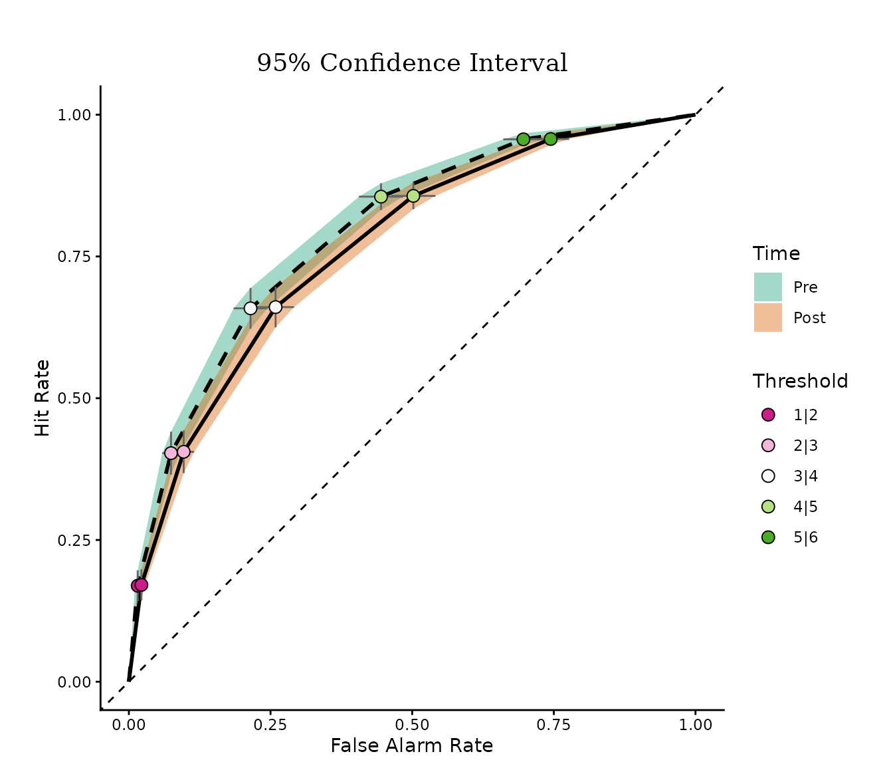
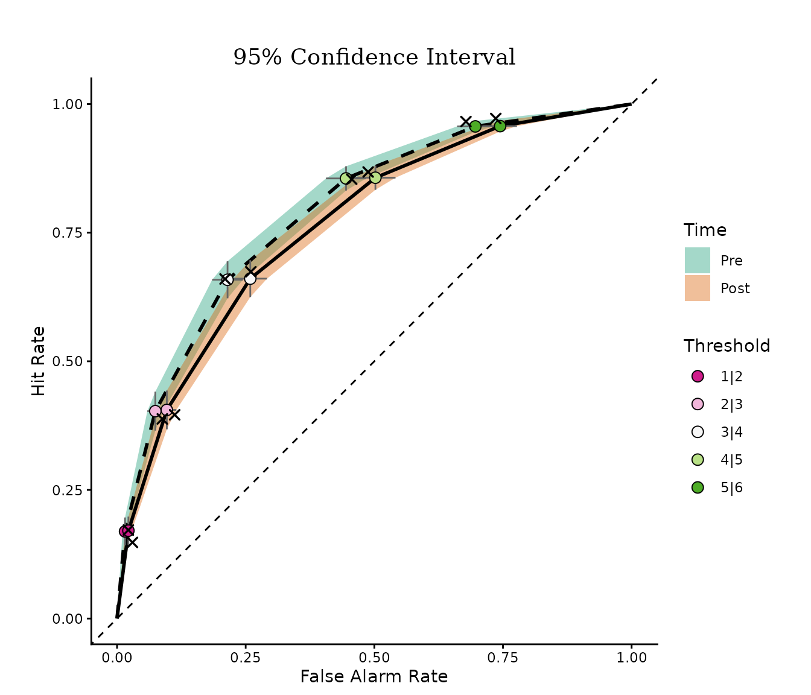
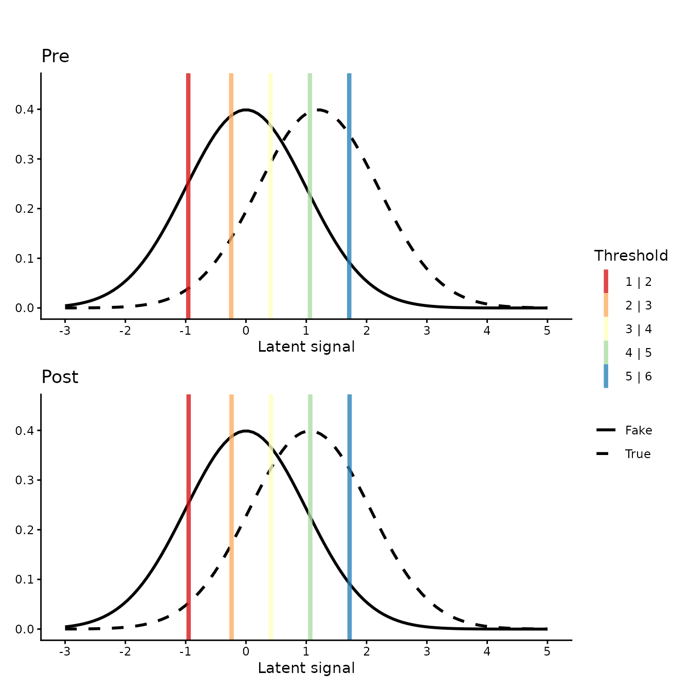
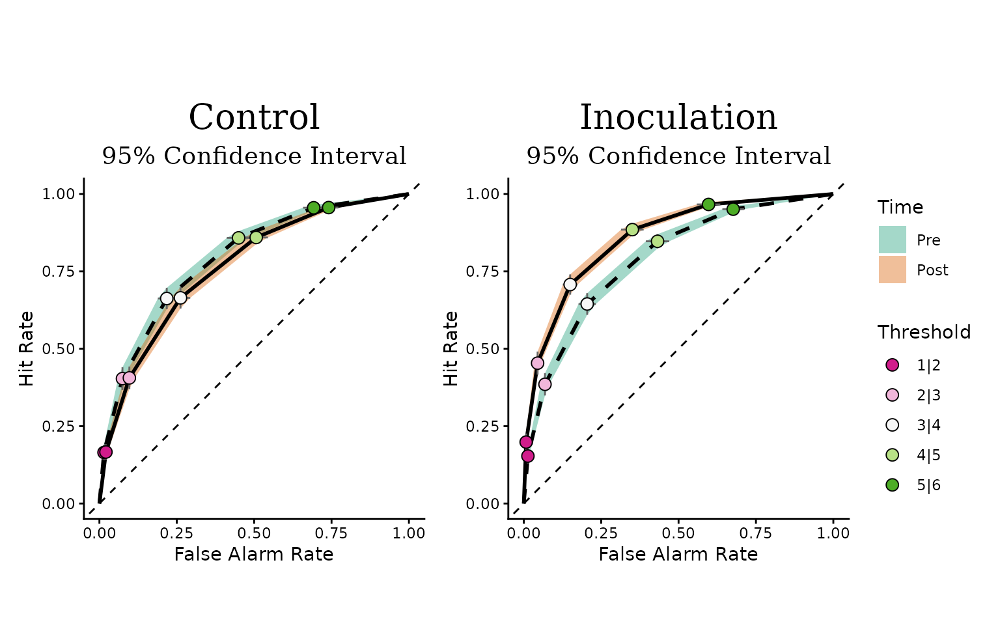

Visualizing ordinal regression models
Source:vignettes/visualizing-ordinal-models.Rmd
visualizing-ordinal-models.RmdOrdinal models as signal detection models
Rating-scale responses — “how true does this headline seem, from 1 to 6?” — are ordinal: the categories are ordered, but the distances between them are unknown. Cumulative link models (ordinal regression) handle this by assuming a continuous latent variable that is cut into observed categories by a set of thresholds. When the link is probit, this is exactly the model of classic signal detection theory (SDT): each stimulus class produces a normal distribution on a latent “perceived signal” axis, and the thresholds are the response criteria. The distance between the distributions is the discriminability (d’), and the placement of the thresholds captures response bias.
This equivalence means an ordinal regression fit can be displayed in
two complementary ways. The latent-distribution plot shows the two
stimulus distributions and the thresholds directly. The receiver
operating characteristic (ROC) curve plots the hit rate against the
false-alarm rate at every threshold, summarizing discrimination
independently of bias. OrdinalRegressionViz draws both, for frequentist
models fitted with ordinal::clm()/clmm() and
for Bayesian models fitted with brms::brm().
These visualizations accompany Simchon, Zipori, Teitelbaum, Lewandowsky, and van der Linden (2026), “A signal detection theory meta-analysis of psychological inoculation against misinformation”, Current Opinion in Psychology, 67, 102194 (doi:10.1016/j.copsyc.2025.102194), where the same displays are used to compare discrimination and response bias before and after psychological inoculation interventions.
The sdt_ratings dataset
The package ships with sdt_ratings, a simulated
trial-level dataset in a 2 x 2 x 2 signal-detection design. Fifty
participants in two conditions (control /
inoculation) rated true and fake news headlines
(target) before and after the intervention
(time) on a 6-point perceived-truth scale
(value; 1 = “definitely fake”, 6 = “definitely true”):
str(sdt_ratings)
#> 'data.frame': 4000 obs. of 5 variables:
#> $ id : Factor w/ 50 levels "S01","S02","S03",..: 1 1 1 1 1 1 1 1 1 1 ...
#> $ condition: Factor w/ 2 levels "control","inoculation": 1 1 1 1 1 1 1 1 1 1 ...
#> $ time : Factor w/ 2 levels "pre","post": 1 1 1 1 1 1 1 1 1 1 ...
#> $ target : Factor w/ 2 levels "fake","true": 1 1 1 1 1 1 1 1 1 1 ...
#> $ value : Ord.factor w/ 6 levels "1"<"2"<"3"<"4"<..: 4 5 2 3 3 2 2 1 2 1 ...The data were generated from an unequal-variance probit SDT model in
which inoculation increases post-intervention discrimination (d’) and
makes the response criteria stricter. The generating code is in
data-raw/sdt_ratings.R in the source repository.
Frequentist workflow
Fit a cumulative probit model on the control condition with
ordinal::clm():
fit <- ordinal::clm(
value ~ target * time,
data = subset(sdt_ratings, condition == "control"),
link = "probit"
)ROC curve
roc_plot() draws one ROC curve per level of
var_group, with confidence bands and one point per response
threshold. The first level of var_signal is treated as the
signal class, and the hit rate is the probability of a low response
category given signal — here, giving a fake headline
(target = "fake") a low perceived-truth rating:
roc_plot(fit, var_signal = "target", var_group = "time")
The farther a curve bows away from the diagonal (chance performance), the better participants discriminate fake from true headlines. In the control condition the pre and post curves are close to each other, as expected: no intervention took place between the two measurements.
Setting show_empirical = TRUE overlays the observed hit
and false-alarm rates as crosses — if the model fits, they should sit on
or near the model-implied curves:
roc_plot(
fit,
var_signal = "target", var_group = "time",
show_empirical = TRUE
)
Latent distributions
SDT_distributions_plot() shows the same model as latent
distributions. Each panel corresponds to one level of
var_group and displays the noise and signal distributions
together with the five estimated thresholds:
SDT_distributions_plot(fit, var_signal = "target", var_group = "time")
The horizontal distance between the two curves within a panel is d’. The vertical lines are the response criteria: their spacing shows how the 6-point scale maps onto the latent axis, and shifts of the whole set between panels indicate a change in response bias.
Faceting by a third variable
To compare conditions, fit the model on the full dataset and pass the
third factor as var_facet. Two ROC panels are drawn side by
side:
fit3 <- ordinal::clm(
value ~ target * time * condition,
data = sdt_ratings,
link = "probit"
)
roc_plot(
fit3,
var_signal = "target", var_group = "time", var_facet = "condition"
)
In the inoculation panel the post curve bows out farther than the pre
curve: discrimination improved after the intervention. The same argument
works in SDT_distributions_plot(), which then draws a 2 x 2
grid of panels.
SDT indices
sdt_indices() returns the quantities behind these
displays as a tidy data frame: the sensitivity index d’, the
signal/noise scale ratio, the response criteria, and the area under the
implied ROC curve, one set per design cell:
sdt_indices(
fit3,
var_signal = "target", var_group = "time", var_facet = "condition"
)
#> time condition index estimate lower upper
#> 1 pre control d_prime 1.1990756 NA NA
#> 2 pre control sigma_ratio 1.0000000 NA NA
#> 3 pre control auc 0.8017461 NA NA
#> 4 pre control criterion 1|2 -0.9742724 NA NA
#> 5 pre control criterion 2|3 -0.2440087 NA NA
#> 6 pre control criterion 3|4 0.4188225 NA NA
#> 7 pre control criterion 4|5 1.0723579 NA NA
#> 8 pre control criterion 5|6 1.7013752 NA NA
#> 9 post control d_prime 1.0617237 NA NA
#> 10 post control sigma_ratio 1.0000000 NA NA
#> 11 post control auc 0.7735990 NA NA
#> 12 post control criterion 1|2 -0.9684612 NA NA
#> 13 post control criterion 2|3 -0.2381975 NA NA
#> 14 post control criterion 3|4 0.4246337 NA NA
#> 15 post control criterion 4|5 1.0781691 NA NA
#> 16 post control criterion 5|6 1.7071864 NA NA
#> 17 pre inoculation d_prime 1.1955164 NA NA
#> 18 pre inoculation sigma_ratio 1.0000000 NA NA
#> 19 pre inoculation auc 0.8010444 NA NA
#> 20 pre inoculation criterion 1|2 -1.0221918 NA NA
#> 21 pre inoculation criterion 2|3 -0.2919281 NA NA
#> 22 pre inoculation criterion 3|4 0.3709031 NA NA
#> 23 pre inoculation criterion 4|5 1.0244385 NA NA
#> 24 pre inoculation criterion 5|6 1.6534558 NA NA
#> 25 post inoculation d_prime 1.5832086 NA NA
#> 26 post inoculation sigma_ratio 1.0000000 NA NA
#> 27 post inoculation auc 0.8685360 NA NA
#> 28 post inoculation criterion 1|2 -0.8470587 NA NA
#> 29 post inoculation criterion 2|3 -0.1167950 NA NA
#> 30 post inoculation criterion 3|4 0.5460362 NA NA
#> 31 post inoculation criterion 4|5 1.1995716 NA NA
#> 32 post inoculation criterion 5|6 1.8285889 NA NAFor clm models these are point estimates. The same call
on a brmsfit (below) uses the full posterior and adds
credible intervals — useful when you want to report, say, d’ = 1.9,
95% CrI [1.6, 2.2].
Bayesian workflow
The Bayesian functions expect a cumulative model fitted with
brms::brm(). An unequal-variance SDT model adds a
distributional part for disc, the discrimination (inverse
scale) of the latent distribution. Sampling takes a few minutes, so the
chunks in this section are not evaluated here:
b_fit <- brms::brm(
brms::bf(value ~ target * time, disc ~ target * time),
family = brms::cumulative("probit"),
data = subset(sdt_ratings, condition == "control")
)bayesian_roc_plot() draws the posterior ROC curve per
level of var_group, with curvewise credible bands:
bayesian_roc_plot(b_fit, var_signal = "target", var_group = "time")bayesian_SDT_distribution_plot() draws the posterior
latent distributions with credible bands around each density, and the
posterior distribution of each threshold as a slab on the x axis. With a
disc part the two latent distributions can have different
widths (unequal-variance SDT); without it, unit scales are used.
ndraws subsamples the posterior draws to speed up the
density bands:
bayesian_SDT_distribution_plot(
b_fit,
var_signal = "target", var_group = "time",
plot_range = c(-4, 6), ndraws = 500
)ordinal_model_ppd_check() compares the observed response
distribution with posterior predictive draws, in one facet per
combination of the grouping variables:
ordinal_model_ppd_check(b_fit, group_vars = c("target", "time"))Finally, sdt_indices() on a brmsfit
summarizes the posterior of every SDT index with a credible
interval:
sdt_indices(b_fit, var_signal = "target", var_group = "time", ci = 0.95)Notes
-
Links other than probit. The latent distribution
follows the model’s link function: normal for
probit, logistic forlogit, Cauchy forcauchit, and Gumbel forcloglog/loglog. The probit link gives the classic SDT display. -
Saving plots. All functions return
ggplot/patchworkobjects. Save them withggplot2::ggsave(), for exampleggplot2::ggsave("roc.png", roc_plot(fit, "target", "time"), width = 7, height = 6, dpi = 300).